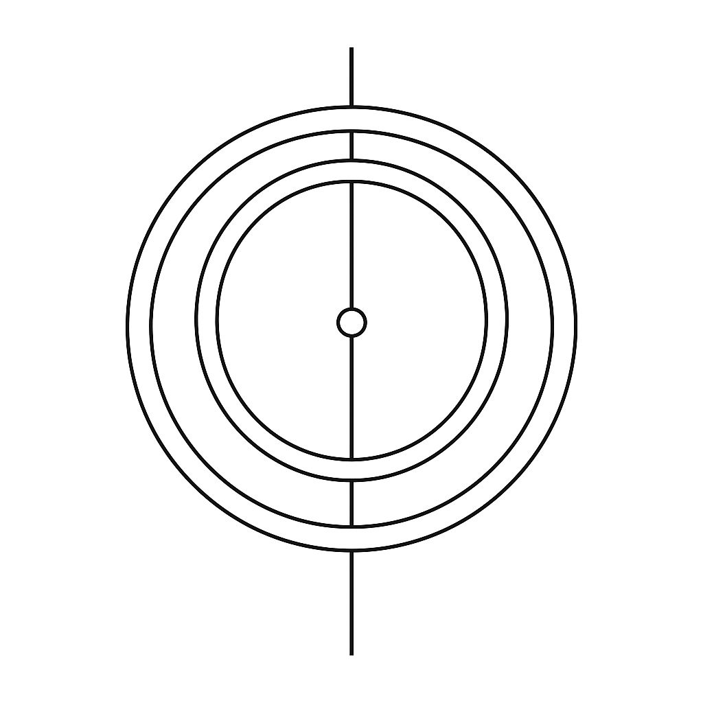

Discover a better way
to navigate
our turbulent times
Develop game-changing foundational capacities and use them to transform your challenges, be they personal, organizational or global.

Articulates a cohesive new whole-system approach for moving beyond the current polycrisis, and provides practical tools to begin living the new approach now.